Reference
Masked visual action
Ours
Ground truth
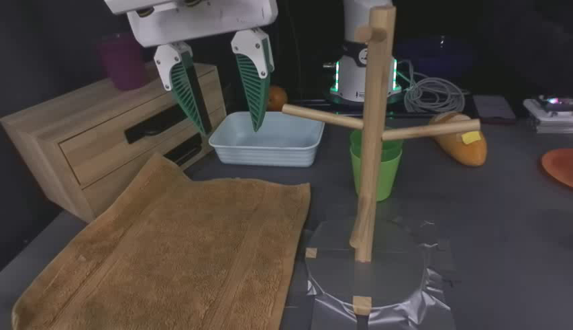
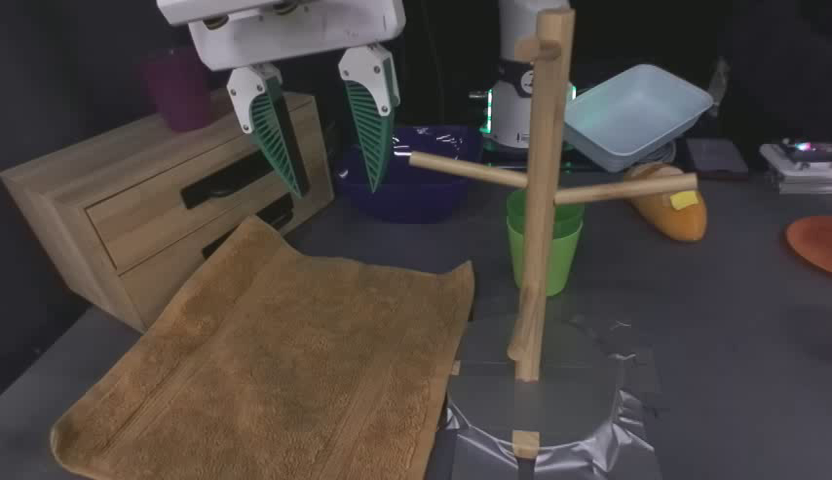
How should we interact with video world models? We introduce masked visual actions, a simple representation that generalizes across unseen robots and objects. Reveal part of a video, and the model predicts how the scene unfolds.
Our video world model takes a reference frame and a masked visual action video, and outputs a video of the scene that follows that action. In the forward setting, the action is a rendering of the robot, and the model simulates the robot's effect on the scene. In the inverse setting, the action is a goal object motion, and the model synthesizes the robot motion that achieves it.
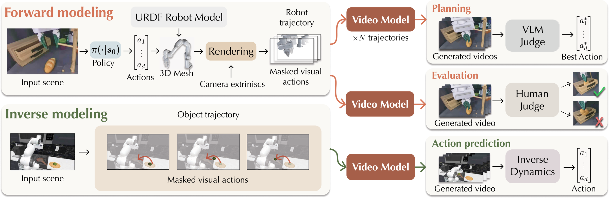
By conditioning on a rendering of the robot's actions, our video world model simulates the robot's interaction with the scene shown in the reference frame. We show that its simulated rollouts align with real-world execution (GT).


See our full 80 real-world demonstrations alongside the model simulation across four different tasks here.
Despite only training on masked visual actions (of robots), an emergent capability of our model is taking masked visual actions of objects and generating the robot motion that satisfies the masked visual actions.
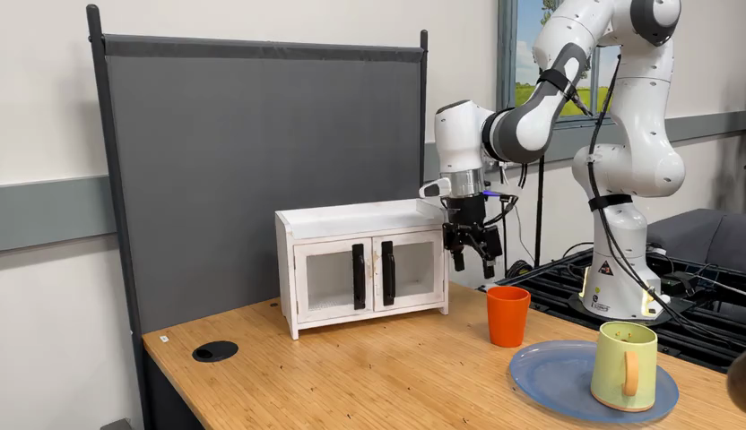
One natural source is a human demonstration. We can extract a masked visual action from a person performing the task, and our model will generate the robot motion that matches it.
Here we show additoinal results from our model in the inverse modeling setting.
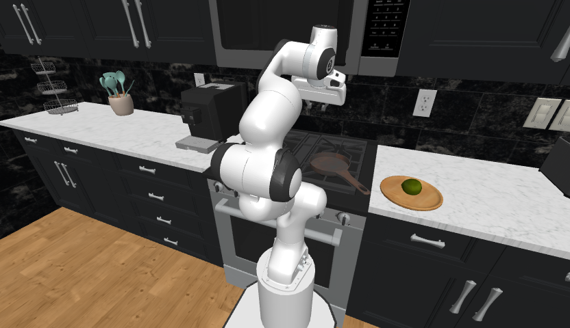
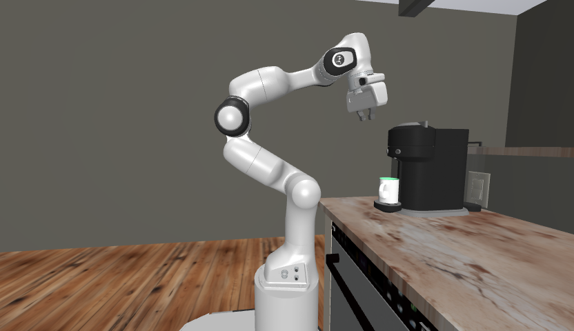
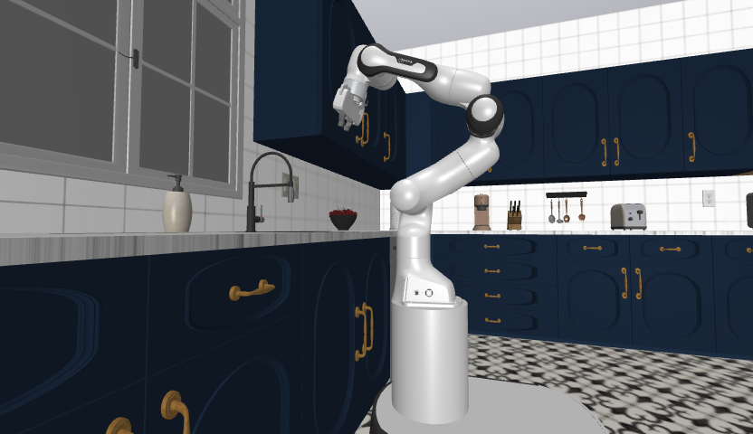
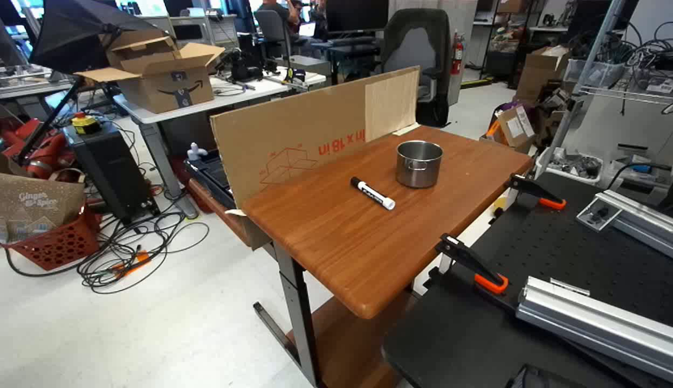
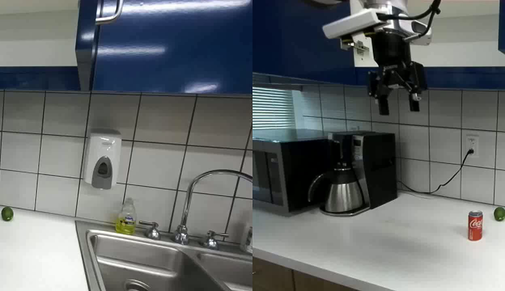
Generalization! As we showed earlier, Visual Masked Actions are so generalizable, they can work for objects as well as diverse unseen robots. To further illustrate the advantage of Masked Visual Actions, we finetune the same base model on visualizations of the robot Skeleton, and End-Effector (EEF) — on the same scene. All were trained on the same data from DROID. The real-world data we captured was using the same robot as droid but with custom unseen gripper. In BEHAVIOR, we use a completely unseen embodiment to all models.
As expected, all variants perform similarly on the training distribution.
Here we see that unlike our method, conditioning on the skeleton or EEF causes the model to transform the robot to match the embodiment seen during training, or would simply introduce another robot into the video. The top row shows each action visualization, and below it the resulting output.
Similarly with using a bimanual robot, our method generalizes well to the unseen embodiment while the other conditioning signals completely collapse. The top row shows each action visualization, and below it the resulting output.
We compare our method conditioned on Masked Visual Actions against Ctrl-World[1] (both are trained on DROID), and also include Wan-Move[2] (trajectory conditioned video model), and Wan2.2 I2V[3] as a reference.
BEHAVIOR uses a bimanual embodiment unseen during training for both our method and Ctrl-world. However, we find that our method generalizes more gracefully.
For fun, we push generalization to the extreme: conditioning on the masked visual action of an orangutan — an embodiment far outside anything seen during training. The model still completes the scene to follow the provided action.
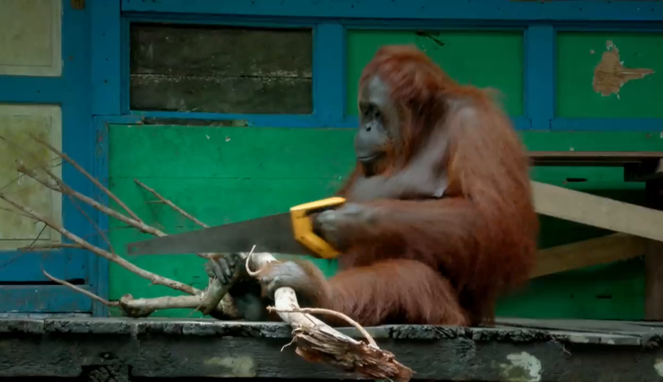
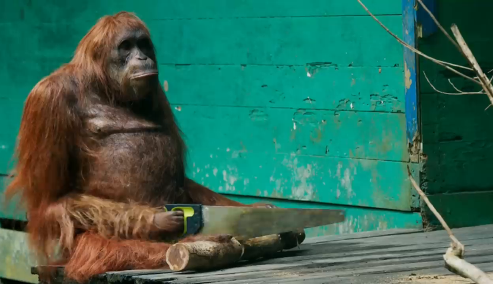
Our model can fail in cases where precise and subtle interaction is needed and may produce unnatural interactions in those cases. Additionally, the model may produce artifacts surrounding regions completely unseen in the reference frame, as the mug example is not showing the handle in the initial image.
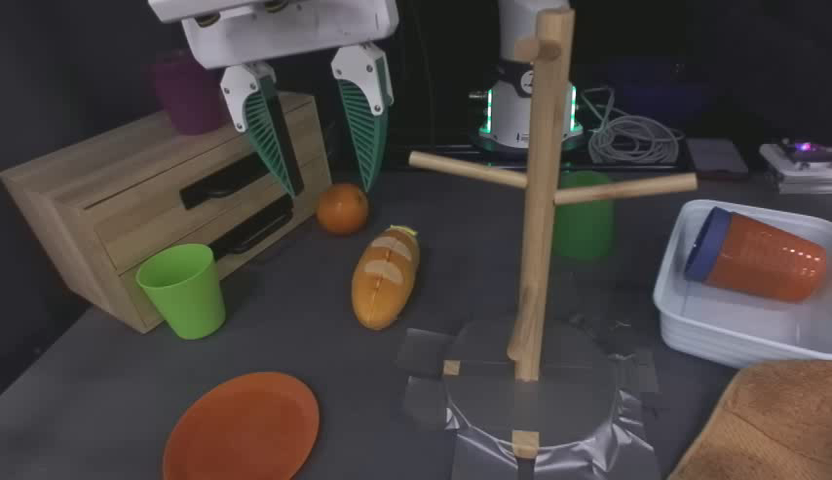
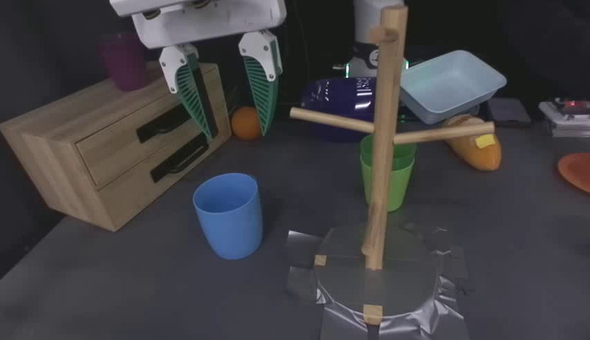
@misc{alzayer2026maskedvisualactionsunified,
title = {Masked Visual Actions for Unified World Modeling},
author = {Hadi Alzayer and Wenlong Huang and Haonan Chen and
Christopher Luey and Lvmin Zhang and Maneesh Agrawala and
Gordon Wetzstein and Li Fei-Fei and Yilun Du and Jiajun Wu and
Jia-Bin Huang},
year = {2026},
eprint = {2607.19343},
archivePrefix = {arXiv},
primaryClass = {cs.CV},
url = {https://arxiv.org/abs/2607.19343}
}